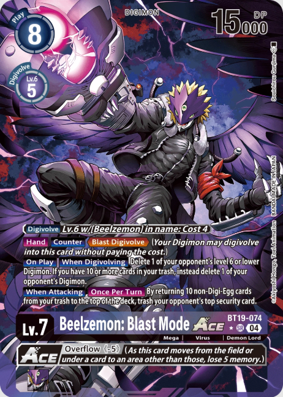

BT19: Booster Xros Evolution
"BT19: Booster Xros Evolution" is the
19th booster Set released in the Japanese format.
Contents
Set
- 109 Cards
- Contents
- 1 Booster Pack contains 12 cards.
- Rarity
- Common: 41 types
- Uncommon: 27 types
- Rare: 22 types
- Super Rare: 12 types
- Secret Rare: 2 types
- SP Rare: 5 types
Promotions
- Each booster box includes a Box Promotion Pack: Xros Evolution.
- The first weekend after release the Xros Evolution BT-19 Release Tournament is
held in stores.
